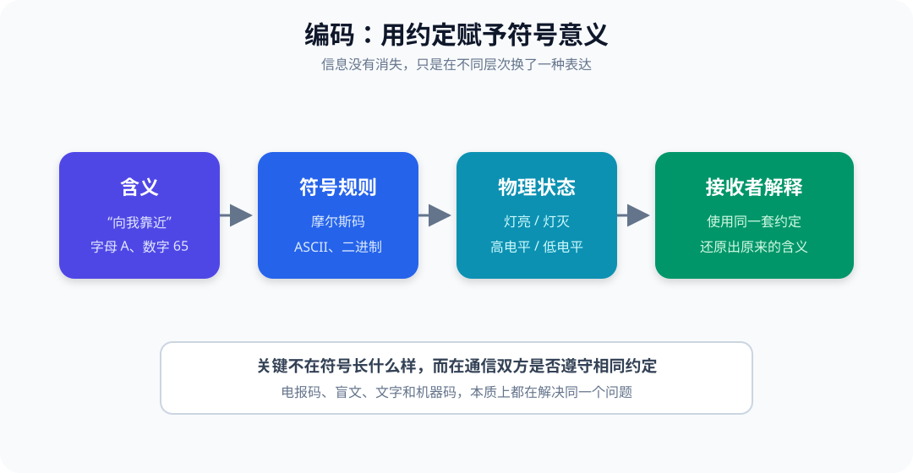
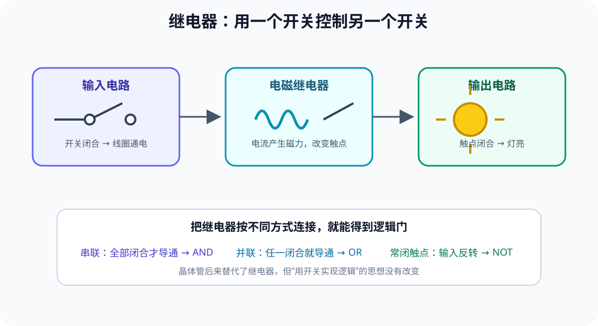
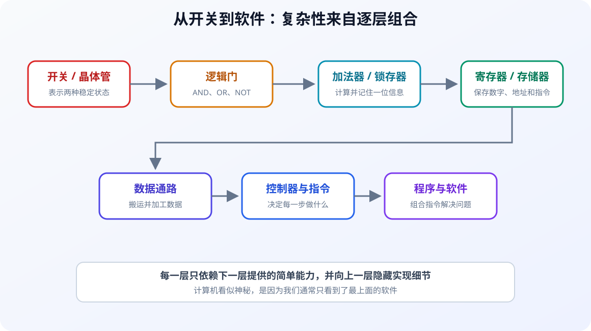

《编码》：从手电筒到计算机
本文复述 Charles Petzold《编码：隐匿在计算机软硬件背后的语言》的核心思想：复杂的计算机并非凭空出现，而是从“如何传递信息”这个简单问题开始，由编码、开关、逻辑和存储逐层搭建而成。
一、全书真正想回答什么
当我们使用电脑时，看到的是文字、图片、窗口和程序；而计算机内部只有大量电路状态。
《编码》试图回答：
人类的思想，怎样一步步变成机器可以保存、传输和处理的信号？
这本书不从现成的 CPU 开始讲，而是从两个人如何隔着一段距离交流开始。它逐层引出：
交流需要约定
↓
约定形成编码
↓
信息可以表示成两种状态
↓
开关可以处理这两种状态
↓
开关组成逻辑门、加法器和存储器
↓
运算器、存储器和控制器组成计算机
↓
机器指令组成程序
全书最重要的不是记住某个电路，而是理解一种方法：
把复杂系统拆成简单部件，再用清晰的规则把它们组合起来。
二、编码就是一套共同约定
假设两个孩子住在相邻的房子里，夜晚想隔着窗户交流。他们可以约定：
- 手电筒短亮表示“点”；
- 手电筒长亮表示“划”；
- 不同的点划组合表示不同字母。
这就是摩尔斯电码。
灯光本身并不携带“字母 A”的天然含义。只有发送者和接收者都知道规则时：
短亮 + 长亮 → ·— → A
这串信号才变成信息。

2.1 编码无处不在
- 文字用字形编码语言；
- 盲文用凸点组合编码字符；
- 摩尔斯码用点和划编码字符；
- 十进制用十个数字符号编码数量；
- 二进制用
0和1编码数量； - ASCII 和 Unicode 用数字编码字符；
- 机器指令用位模式编码操作。
因此，编码不是“加密”的同义词。编码主要解决如何表示信息；加密主要解决如何限制信息被理解。
2.2 好的编码依赖上下文
没有一种编码适合所有场景：
- 摩尔斯码适合用声音、电流或灯光传输；
- 盲文适合用触觉读取；
- 二进制适合由开关电路处理；
- Unicode 适合统一表示世界各地的文字。
评价编码时，需要看它是否容易产生、传输、区分、保存和解释。
三、为什么二进制如此重要
十进制对人类很自然，但电路要稳定区分十种状态并不容易。区分两种状态则简单得多：
关 / 开
无电流 / 有电流
低电平 / 高电平
0 / 1
这两种状态都可以表示一个 bit（位）。
3.1 位能表示多少信息
一个位有两种组合：
0
1
两个位有四种组合：
00 01 10 11
三个位有八种组合。一般来说，\(n\) 个位可以产生：
2^n 种不同组合
因此：
- 4 位可以表示 16 种状态；
- 8 位可以表示 256 种状态；
- 16 位可以表示 65536 种状态。
位数越多，不是因为每一位变复杂了，而是简单状态的组合数量迅速增长。
3.2 二进制如何表示数量
十进制每一位的权重是 10 的幂：
325 = 3×10² + 2×10¹ + 5×10⁰
二进制每一位的权重是 2 的幂：
1101₂ = 1×2³ + 1×2² + 0×2¹ + 1×2⁰
= 8 + 4 + 0 + 1
= 13₁₀
二进制并不是另一种数学，只是另一种记数规则。
3.3 二进制也能表示文字
只要约定数字和字符的对应关系即可。例如 ASCII 规定：
65 → A
66 → B
97 → a
于是：
A → 65 → 01000001
对计算机而言，数字 65 和字母 A 都是一串位。当前程序采用什么编码和数据类型，决定了这串位应被怎样解释。
四、从电报码到继电器
早期电报系统使用电流控制远处的电磁装置。电流通过线圈时产生磁力，可以吸动金属触点。
这就是继电器：
用一条电路的通断，控制另一条电路的通断。

继电器的重要性不只在于远程控制。把多个继电器按不同方式连接，可以让输出遵守明确的逻辑规则。
4.1 与、或、非
与（AND）
两个开关串联，只有 A 和 B 都闭合，灯才亮：
| A | B | 输出 |
|---|---|---|
| 0 | 0 | 0 |
| 0 | 1 | 0 |
| 1 | 0 | 0 |
| 1 | 1 | 1 |
或（OR）
两个开关并联，只要有一个闭合，灯就亮：
| A | B | 输出 |
|---|---|---|
| 0 | 0 | 0 |
| 0 | 1 | 1 |
| 1 | 0 | 1 |
| 1 | 1 | 1 |
非（NOT）
使用常闭触点，可以让输出与输入相反：
输入 0 → 输出 1
输入 1 → 输出 0
这些简单电路就是逻辑门的原型。后来，真空管和晶体管取代了缓慢、耗电且容易磨损的继电器，但逻辑关系没有改变。
五、逻辑门如何完成加法
计算机并不“理解”加法，它只是让电路按照二进制加法规则产生输出。
一位二进制加法：
| A | B | 本位和 | 进位 |
|---|---|---|---|
| 0 | 0 | 0 | 0 |
| 0 | 1 | 1 | 0 |
| 1 | 0 | 1 | 0 |
| 1 | 1 | 0 | 1 |
观察这张表可以发现：
本位和 = A XOR B
进位 = A AND B
这构成一个半加器。
真正的多位加法还要接收低位传来的进位，因此需要全加器。把多个全加器首尾连接，就能计算多位二进制数：
0101 (5)
+ 0011 (3)
-------
1000 (8)
这揭示了全书的一个关键转折：
数学规则可以改写成逻辑规则，逻辑规则可以由开关电路实现。
减法可以借助补码转换为加法，乘法可以拆成移位与多次加法。复杂运算最终仍建立在少量基本操作之上。
六、计算机还必须记住信息
只有逻辑门，电路的输出只取决于当前输入。输入一消失，结果也随之消失。
计算机还需要保存：
- 正在处理的数据；
- 上一步的结果；
- 下一条指令的位置；
- 程序本身。
6.1 反馈产生记忆
如果把逻辑门的输出适当地接回输入，就能让电路维持先前状态。这类电路称为锁存器或触发器。
一个锁存器可以保存 1 位：
写入 1 → 即使写入信号消失，仍保持 1
写入 0 → 改为保持 0
把多个锁存器并排组合：
- 8 个可以保存 1 字节；
- 一组锁存器可以构成寄存器；
- 大量存储单元配合地址选择电路，可以构成存储器。
6.2 地址解决“存在哪里”
存储器中的每个位置都有编号，也就是地址。
地址 0000 → 数据 10110110
地址 0001 → 数据 00101101
地址 0010 → 数据 11100010
访问存储器需要回答两个问题：
- 访问哪个地址？
- 是读取，还是写入？
地址译码器负责从许多存储单元中选中目标位置，读写控制信号决定数据流动方向。
七、时钟让电路有序工作
复杂电路不能让所有部件随意改变状态，否则新旧数据会互相干扰。计算机通常使用周期性时钟信号协调步骤：
一个时钟周期
↓
组合电路根据当前输入计算
↓
在约定时刻把结果写入寄存器
↓
进入下一个周期
时钟像节拍器，而不是思考者。它只规定什么时候推进状态，并不决定要计算什么。
时钟频率表示每秒产生多少个周期，但频率高不等于计算机必然更快。每个周期能完成多少工作、存储器是否及时提供数据，同样重要。
八、从计算器到可编程计算机
加法器能够计算，存储器能够记忆，但还缺少一个关键能力：让机器自动决定下一步做什么。
为此，需要给基本操作编号：
0001 → 从存储器读取数据
0010 → 把数据写入存储器
0011 → 两个数相加
0100 → 根据条件跳转
这些编号就是操作码。操作码再加上数据或地址，就形成机器指令。
8.1 控制器
控制器反复执行：
取指令 → 解释指令 → 执行指令 → 取下一条指令
它根据指令产生控制信号，决定：
- 哪个寄存器输出数据；
- ALU 执行哪种运算；
- 是否读写存储器；
- 结果写到哪里；
- 下一条指令地址是什么。
8.2 程序也是数据
当指令也以二进制形式存入存储器后，计算机就获得了“存储程序”能力。
同一套硬件不需要重新接线，只需换一组指令，就能执行不同任务：
相同硬件 + 绘图程序 → 处理图像
相同硬件 + 文本程序 → 编辑文章
相同硬件 + 游戏程序 → 运行游戏
这正是通用计算机和固定功能计算器之间的根本差别。
九、软件是继续向上的编码
机器码仍然很难由人直接编写，于是人们不断建立新的抽象层：
机器码
↓ 用助记符表示
汇编语言
↓ 用变量、表达式和控制结构表示
高级语言
↓ 封装常用能力
库、操作系统和应用程序
汇编器把助记符编码成机器指令；编译器把高级语言翻译成低级指令；操作系统把硬件能力组织成文件、进程和窗口等更方便的概念。

每增加一层，使用者就不必重复理解下一层的全部细节。例如程序员可以调用“写文件”，不必亲自控制磁盘电路。
但抽象没有消灭底层：
- 字符最终仍要编码成位；
- 加法最终仍由逻辑电路完成；
- 变量最终仍保存在寄存器或存储器中；
- 程序最终仍要转换成机器可以执行的指令。
十、这本书最值得带走的五个认识
10.1 信息依赖约定
符号本身没有固定意义。发送者与接收者共享同一套规则，物理信号才能成为信息。
10.2 二进制简单，但组合能力极强
一个位只有两种状态，许多位却能编码数字、文字、声音、图像和指令。复杂性来自组合，而不是基本单元本身复杂。
10.3 计算可以还原为逻辑
加法表可以变成布尔逻辑，布尔逻辑可以变成开关连接方式，因此抽象的数学运算能够落到物理电路上。
10.4 记忆来自状态
反馈电路使系统不只响应当前输入，还能保留过去。拥有状态以后，电路才能形成寄存器、存储器和按步骤执行的机器。
10.5 软件没有脱离硬件
高级语言、操作系统和应用只是层次更高的编码。它们隐藏了底层细节，却始终建立在二进制、逻辑门和机器指令之上。
十一、一句话总结
《编码》用一条非常朴素的路线拆除了计算机的神秘感：
人类先约定符号来表达信息，再把符号化为两种物理状态；开关处理这些状态，逻辑门组合成运算和存储电路，控制器按照存储器中的指令驱动电路，最终形成可以运行软件的通用计算机。
读完这本书真正获得的，不是一张需要背诵的计算机结构图，而是一种确定感：
再复杂的计算机，
也能沿着“编码 → 开关 → 逻辑 → 状态 → 指令 → 软件”
一层一层解释清楚。